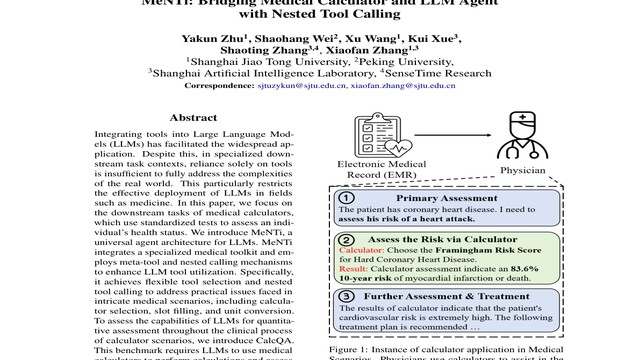
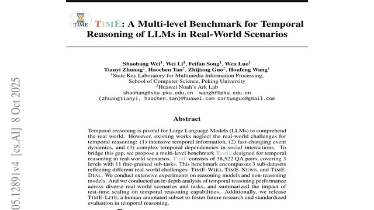
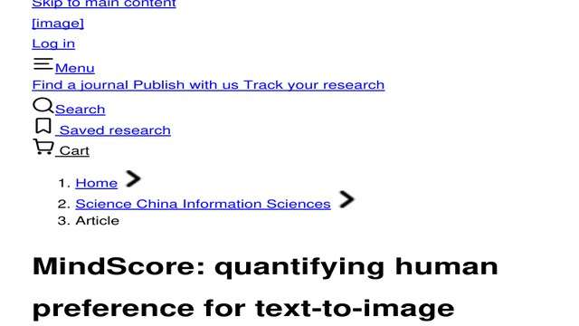
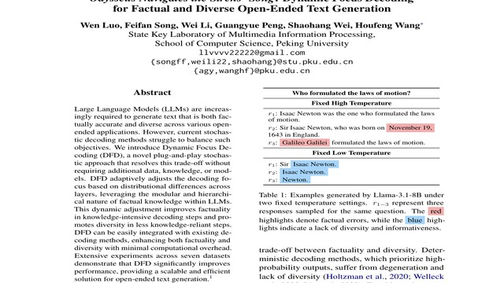

Shaohang Wei
I am a first-year Ph.D. student in Computer Science at Peking University, advised by Prof. Houfeng Wang. My research interests broadly span language modeling, with a
particular focus on continual learning and self-evolving of LLMs/Agents. I strive to understand the
learning behaviors of LLMs and seek ways to enable them to continuously improve and generalize across
multiple domains.
You can also find me on Twitter/X
and REDNote.
Representative Works


TIME: A Multi-level Benchmark for Temporal Reasoning of LLMs in Real-World Scenarios
NeurIPS 2025 Spotlight
(D&B Track)

MindScore: Quantifying Human Preference for Text-to-image Generation Through Multi-view Lens
Science China Information Sciences

Publications
- TimE: A Multi-level Benchmark for Temporal Reasoning of LLMs in Real-World Scenarios. S. Wei, W. Li, F. Song, W. Luo, T. Zhuang, H. Tan, Z. Guo, H. Wang. NeurIPS 2025 Spotlight (D&B Track) .
- Sparse but Critical: A Token-Level Analysis of Distributional Shifts in RLVR Fine-Tuning of LLMs. H. Meng, K. Huang, S. Wei, C. Ma, S. Yang, X. Wang, G. Wang, B. Ding, J. Zhou. ICLR 2026.
- Odysseus Navigates the Sirens' Song: Dynamic Focus Decoding for Factual and Diverse Open-Ended Text Generation. W. Luo, F. Song, W. Li, G. Peng, S. Wei, H. Wang. ACL 2025 Main.
- Well Begun is Half Done: Low-resource Preference Alignment by Weak-to-Strong Decoding. F. Song, S. Wei, W. Luo, Y. Fan, T. Liu, G. Wang, H. Wang. ACL 2025 Findings.
- MeNTi: Bridging Medical Calculator and LLM Agent with Nested Tool Calling. Y. Zhu, S. Wei, X. Wang, K. Xue, X. Zhang, S. Zhang. NAACL 2025 Main.
- MindScore: quantifying human preference for text-to-image generation through multi-view lens. Y. Tong, J. Zhang, S. Wei, W. Guo, F. Zhuang, D. Wang, X. Yang, R. Xuan. SCIS 2025 (CCF-A).
Selected Preprints
- SWE-Ext: Extending and Scaling Augmented Data for Repository-Level Coding Tasks. W. Li, X. Zhang, S. Wei, Y. Gao, Z. Guo, W. Luo, F. Song, Y. Huang, H. Wang. Submitted to ACL 2026.
- Two Pathways to Truthfulness: On the Intrinsic Encoding of LLM Hallucinations. W. Luo, G. Peng, W. Li, S. Wei, F. Song, L. Wang, N. Yang, X. Zhang, J. Jin, F. Wei, H. Wang. Submitted to ACL 2026.
- Mitigating Overthinking through Reasoning Shaping. F. Song, S. Wei, B. Gao, Y. Wang, W. Luo, W. Li, L. Yao, W. Xiong, L. Chen, T. Liu, H. Wang. Submitted to ACL 2026.
- Probability-Entropy Calibration: An Elastic Indicator for Adaptive Fine-tuning. W. Yu, S. Wei, J. Liu, Y. Li, M. Hu, A. Liu, H. Zhang, I. King. Submitted to ICML 2026.
- One-Way Policy Optimization for Self-Evolving LLMs. S. Yang, J. Lu, K. Huang, C. Ma, S. Wei, Y. Liu, G. Wang, J. Zhou, L. Yuan. Submitted to ICML 2026.
- Experience Augmented Policy Optimization for LLM Reasoning. J. Lu, K. Huang, J. Wu, S. Yang, J. Li, C. Ma, S. Wei, X. Wang, G. Wang, J. Zhou. Submitted to ICML 2026.
- CiteCheck: Towards Accurate Citation Faithfulness Detection. Z. Xu, S. Wei, Z. Han, J. Jin, Z. Yang, X. Li, H. Tan, Z. Guo, H. Wang. arXiv preprint arXiv:2502.10881.